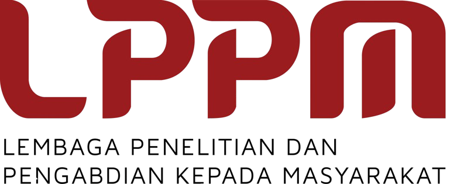

<!DOCTYPE html>
<html lang="en">
<head>
    <meta charset="UTF-8">
    <meta name="viewport" content="width=device-width, initial-scale=1.0">
    <link rel="icon" href="images/ICGEET-2025-LOGO-ONLY.png">
    <title>KEYNOTE SPEAKERS | ICGEET 2025</title>
    <script src="https://cdn.jsdelivr.net/npm/@tailwindcss/browser@4"></script>
    <link rel="stylesheet" href="https://cdnjs.cloudflare.com/ajax/libs/font-awesome/6.4.2/css/all.min.css" />
</head>
<body class="bg-white text-gray-900">
    <!-- Navbar -->
    <nav class="bg-transparent absolute top-0 left-0 w-full z-50">
        <div class="container mx-auto flex items-center justify-between py-4 px-4">
            <div class="flex items-center">
                
            </div>
            <ul class="hidden md:flex space-x-6 font-medium">
                <li class="relative group">
                    <a href="index.html" class="text-white relative group px-2 py-1 flex items-center">
                        HOME
                        <span class="ml-1 w-3 h-3"></span>
                        <span class="absolute left-0 -bottom-1 w-full h-0.5 bg-white transition-transform origin-left scale-x-0 group-hover:scale-x-100"></span>
                    </a>
                </li>
                <li class="relative group">
                    <a href="#" class="text-white relative group px-2 py-1 flex items-center">
                        ABOUT
                        <svg class="ml-1 w-3 h-3" fill="none" stroke="currentColor" viewBox="0 0 24 24">
                            <path stroke-linecap="round" stroke-linejoin="round" stroke-width="2" d="M19 9l-7 7-7-7" />
                        </svg>
                        <span class="absolute left-0 -bottom-1 w-full h-0.5 bg-white transition-transform origin-left scale-x-0 group-hover:scale-x-100"></span>
                    </a>
                    <ul class="absolute left-0 mt-2 w-48 bg-white text-gray-800 rounded shadow-lg opacity-0 group-hover:opacity-100 transition-opacity z-50">
                        <li><a href="about-icgeet.html" class="block px-4 py-2 hover:bg-gray-100">ABOUT ICGEET</a></li>
                        <li><a href="about-committee.html" class="block px-4 py-2 hover:bg-gray-100">COMMITTEE</a></li>
                    </ul>
                </li>
                <li class="relative group">
                    <a href="#" class="text-white relative group px-2 py-1 flex items-center font-bold">
                        PROGRAM
                        <svg class="ml-1 w-3 h-3" fill="none" stroke="currentColor" viewBox="0 0 24 24">
                            <path stroke-linecap="round" stroke-linejoin="round" stroke-width="2" d="M19 9l-7 7-7-7" />
                        </svg>
                        <span class="absolute left-0 -bottom-1 w-full h-0.5 bg-white transition-transform origin-left scale-x-100"></span>
                    </a>
                    <ul class="absolute left-0 mt-2 w-48 bg-white text-gray-800 rounded shadow-lg opacity-0 group-hover:opacity-100 transition-opacity z-50">
                        <li><a href="program-program-at-glance.html" class="block px-4 py-2 hover:bg-gray-100">PROGRAM AT A GLANCE</a></li>
                        <li><a href="program-keynote-speakers.html" class="block px-4 py-2 hover:bg-gray-100">KEYNOTE SPEAKERS</a></li>
                        <li><a href="program-social-program.html" class="block px-4 py-2 hover:bg-gray-100">SOCIAL PROGRAM</a></li>
                    </ul>
                </li>
                <li class="relative group">
                    <a href="book-of-program.html" class="text-white relative group px-2 py-1 flex items-center">
                        BOOK OF PROGRAM
                        <span class="ml-1 w-3 h-3"></span>
                        <span class="absolute left-0 -bottom-1 w-full h-0.5 bg-white transition-transform origin-left scale-x-0 group-hover:scale-x-100"></span>
                    </a>
                </li>
                <li class="relative group">
                    <a href="#" class="text-white relative group px-2 py-1 flex items-center">
                        SUBMISSION
                        <svg class="ml-1 w-3 h-3" fill="none" stroke="currentColor" viewBox="0 0 24 24">
                            <path stroke-linecap="round" stroke-linejoin="round" stroke-width="2" d="M19 9l-7 7-7-7" />
                        </svg>
                        <span class="absolute left-0 -bottom-1 w-full h-0.5 bg-white transition-transform origin-left scale-x-0 group-hover:scale-x-100"></span>
                    </a>
                    <ul class="absolute left-0 mt-2 w-48 bg-white text-gray-800 rounded shadow-lg opacity-0 group-hover:opacity-100 transition-opacity z-50">
                        <li><a href="submission-call-for-papers.html" class="block px-4 py-2 hover:bg-gray-100">CALL FOR PAPERS</a></li>
                        <li><a href="submission-important-dates.html" class="block px-4 py-2 hover:bg-gray-100">IMPORTANT DATES</a></li>
                        <li><a href="submission-topics.html" class="block px-4 py-2 hover:bg-gray-100">CONFERENCE SCOPES</a></li>
                        <li><a href="submission-registration.html" class="block px-4 py-2 hover:bg-gray-100">CONFERENCE FEE</a></li>
                        <li><a href="submission-publication.html" class="block px-4 py-2 hover:bg-gray-100">PUBLICATION OPTION</a></li>
                    </ul>
                </li>
                <li class="relative group">
                    <a href="sponsors.html" class="text-white relative group px-2 py-1 flex items-center">
                        SPONSORS
                        <span class="ml-1 w-3 h-3"></span>
                        <span class="absolute left-0 -bottom-1 w-full h-0.5 bg-white transition-transform origin-left scale-x-0 group-hover:scale-x-100"></span>
                    </a>
                </li>
                <li class="relative group">
                    <a href="#" class="text-white relative group px-2 py-1 flex items-center">
                        TRAVEL & VENUE
                        <svg class="ml-1 w-3 h-3" fill="none" stroke="currentColor" viewBox="0 0 24 24">
                            <path stroke-linecap="round" stroke-linejoin="round" stroke-width="2" d="M19 9l-7 7-7-7" />
                        </svg>
                        <span class="absolute left-0 -bottom-1 w-full h-0.5 bg-white transition-transform origin-left scale-x-0 group-hover:scale-x-100"></span>
                    </a>
                    <ul class="absolute left-0 mt-2 w-48 bg-white text-gray-800 rounded shadow-lg opacity-0 group-hover:opacity-100 transition-opacity z-50">
                        <li><a href="travel-venue.html" class="block px-4 py-2 hover:bg-gray-100">VENUE INFO</a></li>
                        <li><a href="travel-guide.html" class="block px-4 py-2 hover:bg-gray-100">TRAVEL GUIDE</a></li>
                        <li><a href="travel-tourism.html" class="block px-4 py-2 hover:bg-gray-100">TOURISM RECOMMENDATIONS</a></li>
                        <li><a href="travel-visa-information.html" class="block px-4 py-2 hover:bg-gray-100">VISA INFORMATION</a></li>
                    </ul>
                </li>
                <li class="relative group">
                    <a href="contact.html" class="text-white relative group px-2 py-1 flex items-center">
                        CONTACT
                        <span class="ml-1 w-3 h-3"></span>
                        <span class="absolute left-0 -bottom-1 w-full h-0.5 bg-white transition-transform origin-left scale-x-0 group-hover:scale-x-100"></span>
                    </a>
                </li>
            </ul>
            <!-- Mobile menu button -->
            <button id="menu-btn" class="md:hidden text-white focus:outline-none">
                <svg xmlns="http://www.w3.org/2000/svg" fill="none" viewBox="0 0 24 24" stroke="currentColor" class="w-8 h-8">
                    <path stroke-linecap="round" stroke-linejoin="round" stroke-width="2" d="M4 6h16M4 12h16M4 18h16" />
                </svg>
            </button>
        </div>
        <!-- Mobile menu -->
        <div id="mobile-menu" class="md:hidden hidden bg-[#37763F] bg-opacity-80 absolute w-full left-0 top-16 z-50">
            <ul class="flex flex-col items-start py-4 space-y-2">
                <li><a href="index.html" class="text-white block px-4 py-2">HOME</a></li>
                <li class="w-full">
                    <button type="button" class="w-full flex items-center justify-between px-4 py-2 text-white focus:outline-none" onclick="toggleDropdown('about-mobile-dropdown')">
                        <span>ABOUT</span>
                        <svg class="w-4 h-4 ml-2 inline" fill="none" stroke="currentColor" viewBox="0 0 24 24">
                            <path stroke-linecap="round" stroke-linejoin="round" stroke-width="2" d="M19 9l-7 7-7-7" />
                        </svg>
                    </button>
                    <ul id="about-mobile-dropdown" class="hidden bg-[#37763F]">
                        <li><a href="about-icgeet.html" class="block px-8 py-2 text-white">ABOUT ICGEET</a></li>
                        <li><a href="about-committee.html" class="block px-8 py-2 text-white">COMMITTEE</a></li>
                    </ul>
                </li>
                <li class="w-full">
                    <button type="button" class="w-full flex items-center justify-between px-4 py-2 text-white font-bold underline focus:outline-none" onclick="toggleDropdown('program-mobile-dropdown')">
                        <span>PROGRAM</span>
                        <svg class="w-4 h-4 ml-2 inline" fill="none" stroke="currentColor" viewBox="0 0 24 24">
                            <path stroke-linecap="round" stroke-linejoin="round" stroke-width="2" d="M19 9l-7 7-7-7" />
                        </svg>
                    </button>
                    <ul id="program-mobile-dropdown" class="hidden bg-[#37763F]">
                        <li><a href="program-program-at-glance.html" class="block px-8 py-2 text-white">PROGRAM AT A GLANCE</a></li>
                        <li><a href="program-keynote-speakers.html" class="block px-8 py-2 text-white font-bold underline">KEYNOTE SPEAKERS</a></li>
                        <li><a href="program-social-program.html" class="block px-8 py-2 text-white">SOCIAL PROGRAM</a></li>
                    </ul>
                </li>
                <li><a href="book-of-program.html" class="text-white block px-4 py-2">BOOK OF PROGRAM</a></li>
                <li class="w-full">
                    <button type="button" class="w-full flex items-center justify-between px-4 py-2 text-white focus:outline-none" onclick="toggleDropdown('submission-mobile-dropdown')">
                        <span>SUBMISSION</span>
                        <svg class="w-4 h-4 ml-2 inline" fill="none" stroke="currentColor" viewBox="0 0 24 24">
                            <path stroke-linecap="round" stroke-linejoin="round" stroke-width="2" d="M19 9l-7 7-7-7" />
                        </svg>
                    </button>
                    <ul id="submission-mobile-dropdown" class="hidden bg-[#37763F]">
                        <li><a href="submission-call-for-papers.html" class="block px-8 py-2 text-white">CALL FOR PAPERS</a></li>
                        <li><a href="submission-important-dates.html" class="block px-8 py-2 text-white">IMPORTANT DATES</a></li>
                        <li><a href="submission-topics.html" class="block px-8 py-2 text-white">CONFERENCE SCOPES</a></li>
                        <li><a href="submission-registration.html" class="block px-8 py-2 text-white">CONFERENCE FEE</a></li>
                        <li><a href="submission-publication.html" class="block px-8 py-2 text-white">PUBLICATION OPTION</a></li>
                    </ul>
                </li>
                <li><a href="sponsors.html" class="text-white block px-4 py-2">SPONSORS</a></li>
                <li class="w-full">
                    <button type="button" class="w-full flex items-center justify-between px-4 py-2 text-white focus:outline-none" onclick="toggleDropdown('travel-mobile-dropdown')">
                        <span>TRAVEL & VENUE</span>
                        <svg class="w-4 h-4 ml-2 inline" fill="none" stroke="currentColor" viewBox="0 0 24 24">
                            <path stroke-linecap="round" stroke-linejoin="round" stroke-width="2" d="M19 9l-7 7-7-7" />
                        </svg>
                    </button>
                    <ul id="travel-mobile-dropdown" class="hidden bg-[#37763F]">
                        <li><a href="travel-venue.html" class="block px-8 py-2 text-white">VENUE INFO</a></li>
                        <li><a href="travel-guide.html" class="block px-8 py-2 text-white">TRAVEL GUIDE</a></li>
                        <li><a href="travel-tourism.html" class="block px-8 py-2 text-white">TOURISM RECOMMENDATIONS</a></li>
                        <li><a href="travel-visa-information.html" class="block px-8 py-2 text-white">VISA INFORMATION</a></li>
                    </ul>
                </li>
                <li><a href="contact.html" class="text-white block px-4 py-2">CONTACT</a></li>
            </ul>
        </div>
    </nav>
    <!-- Header Image Section -->
    <section class="relative min-h-[50vh] flex items-center justify-center pt-20 md:pt-0">
        
        <div class="absolute inset-0 bg-[#37763F]/30"></div>
    </section>
    <!-- Main Content -->
    <main class="container mx-auto px-4 md:px-48 mt-10">
        <h2 class="text-2xl md:text-4xl font-medium mb-4">Keynote Speakers</h2>
        <div class="border-b border-gray-300"></div>
        <section class="mx-auto py-8">
            <div class="flex flex-col md:flex-row gap-6 p-6 items-start">
                <div class="w-36 h-36 rounded-full overflow-hidden border-2 border-green-600 flex-shrink-0">
                    
                </div>
                <div class="flex-1">
                    <h2 class="text-2xl font-bold text-green-800 mb-1">Prof. Chang-Wook Lee</h2>
                    <div class="text-green-700 font-semibold mb-2">Kangwon National University</div>
                    <div class="border-b border-green-200 my-2"></div>
                    <p class="text-gray-800 text-justify">
                        Chang-Wook Lee (Senior Member, IEEE) is a Professor with the Department of Science Education and
                        Department of Smart Regional Innovation at Kangwon National University. He received his B.S. degree
                        in Geology from Kangwon National University in 2000, followed by his M.S. (2002) and Ph.D. (2009) in
                        Earth System Sciences (Remote Sensing) from Yonsei University, where his graduate research focused
                        on ground subsidence and volcanic surface deformation. After completing his Ph.D., he held a
                        postdoctoral position in InSAR from 2009 to 2011 at the USGS Cascades Volcano Observatory with
                        project support from NASA. His research interests include SAR, InSAR, and timeseries processing
                        technique development for natural disaster monitoring and resource characterization, and he has
                        authored more than 100 articles in these research fields.
                    </p>
                </div>
            </div>
            <div class="flex flex-col md:flex-row gap-6 p-6 items-start">
                <div class="w-36 h-36 rounded-full overflow-hidden border-2 border-green-600 flex-shrink-0">
                    
                </div>
                <div class="flex-1">
                    <h2 class="text-2xl font-bold text-green-800 mb-1">Prof. Andrivo Rusydi</h2>
                    <div class="text-green-700 font-semibold mb-2">National University of Singapore</div>
                    <div class="border-b border-green-200 my-2"></div>
                    <p class="text-gray-800 text-justify">
                        Prof. Dr. Andrivo Rusydi (born 19 January 1976) is an Indonesian physicist and nanotechnology expert
                        who serves as a senior lecturer, permanent researcher, and educator at the National University of
                        Singapore (NUS). He is a graduate of SMA Negeri 2 Padang who later obtained a Bachelor of Science
                        (B.Sc.) in Physics from the Bandung Institute of Technology (ITB) in 1998, as well as his M.Sc.
                        (2001) and Ph.D. (2006) from the University of Groningen, Netherlands. At the age of 31, he was
                        appointed as an assistant professor at NUS and became a member of the Singapore International
                        Graduate Award in early 2008. In addition to actively conducting research in various countries,
                        Andrivo is also a visiting professor in Germany and a visiting researcher in the United States and
                        Canada, where the research techniques he developed have been widely utilized by many developed
                        countries.
                    </p>
                </div>
            </div>
            <div class="flex flex-col md:flex-row gap-6 p-6 items-start">
                <div class="w-36 h-36 rounded-full overflow-hidden border-2 border-green-600 flex-shrink-0">
                    
                </div>
                <div class="flex-1">
                    <h2 class="text-2xl font-bold text-green-800 mb-1">Prof. Jaehyung Yu</h2>
                    <div class="text-green-700 font-semibold mb-2">Chungnam National University</div>
                    <div class="border-b border-green-200 my-2"></div>
                    <p class="text-gray-800 text-justify">
                        Jaehyung Yu received the B.S. degree in geology and the M.S. degree in applied geology from Chungnam
                        National University, Daejeon, South Korea, in 1997 and 1999, respectively, and the Ph.D. degree in
                        geography from Texas A&M University, College Station, TX, USA, in 2005. He had served as an
                        Assistant Professor and an Associate Professor with Texas A&M UniversityKingsville, Kingsville, TX,
                        from 2005 to 2012. He moved to the Department of Geology and Earth Environmental Sciences, Chungnam
                        National University, in 2012, where he is currently serving as an Associate Professor. His specialty
                        includes unmanned aerial vehicles (UAVs) and satellite remote sensing applications on geological
                        processes. (Based on document published on 20 July 2023).
                    </p>
                </div>
            </div>
            <div class="flex flex-col md:flex-row gap-6 p-6 items-start">
                <div class="w-36 h-36 rounded-full overflow-hidden border-2 border-green-600 flex-shrink-0">
                    
                </div>
                <div class="flex-1">
                    <h2 class="text-2xl font-bold text-green-800 mb-1">Dr. Eng. Beta Paramita</h2>
                    <div class="text-green-700 font-semibold mb-2">Universitas Pendidikan Indonesia</div>
                    <div class="border-b border-green-200 my-2"></div>
                    <p class="text-gray-800 text-justify">
                        Dr. Eng. Beta Paramita is an Associate Professor in the Department of Architecture at Universitas
                        Pendidikan Indonesia (UPI). She completed her undergraduate studies in 2000 and earned a Master of
                        Architecture degree with a focus on Tropical Urban Design. She obtained her doctoral degree from The
                        University of Kitakyushu, Japan, in 2014, with a concentration in environmental engineering and
                        architecture. Her research focuses on sustainable cities, building performance, and outdoor thermal
                        comfort. She is a board member of IBPSA-Indonesia (International Building Performance Simulation
                        Association) and is active in the RDI (Resilience Development Initiative) network, particularly in
                        the fields of environmental change and sustainable development.
                        <br><br>
                        Dr. Beta is also responsible for the
                        UI GreenMetric World University Rankings reporting for UPI. In 2017, she initiated the "Pendidikan
                        Hijau" (Green Education) movement, which involves teaching building performance-based design and has
                        since reached over 500 architecture students across Indonesia through an open online program. For
                        her dedication, she was awarded as UPI's Outstanding Lecturer of the Year 2023.
                    </p>
                </div>
            </div>
            <div class="flex flex-col md:flex-row gap-6 p-6 items-start">
                <div class="w-36 h-36 rounded-full overflow-hidden border-2 border-green-600 flex-shrink-0">
                    
                </div>
                <div class="flex-1">
                    <h2 class="text-2xl font-bold text-green-800 mb-1">Ronny Sutarto, Ph.D</h2>
                    <div class="text-green-700 font-semibold mb-2">Canadian Light Source Inc</div>
                    <div class="border-b border-green-200 my-2"></div>
                    <p class="text-gray-800 text-justify">
                        Ronny Sutarto is a scientist working at the REIXS beamline of the Canadian Light Source (CLS), a
                        national synchrotron facility located at the University of Saskatchewan. He has published
                        extensively in areas such as Resonant Soft X-ray Scattering, Solid-State Spectroscopy, and Thin Film
                        Deposition. His significant contributions to research at the REIXS beamline were recognized through
                        the 2020 User Support Award.
                    </p>
                </div>
            </div>
            <div class="flex flex-col md:flex-row gap-6 p-6 items-start">
                <div class="w-36 h-36 rounded-full overflow-hidden border-2 border-green-600 flex-shrink-0">
                    
                </div>
                <div class="flex-1">
                    <h2 class="text-2xl font-bold text-green-800 mb-1">Prof. Muhammad Aziz</h2>
                    <div class="text-green-700 font-semibold mb-2">The University of Tokyo</div>
                    <div class="border-b border-green-200 my-2"></div>
                    <p class="text-gray-800 text-justify">
                        Prof. Muhammad Aziz is a distinguished young Indonesian academic who has made significant contributions on the international stage. Born in Purworejo, Central Java, on February 2, 1980, he currently holds the position of Associate Professor at the Solutions Research Laboratory, Tokyo Institute of Technology, Japan. He has spent over 15 years pursuing his education and academic career in Japan, earning his Bachelor's, Master's, and Doctoral degrees from Kyushu University in Fukuoka.
                        <br><br>
                        Before moving to Japan, he was accepted into the Electrical Engineering program at the Bandung Institute of Technology (ITB), but later withdrew after receiving the prestigious Monbukagakusho (Monbusho) scholarship from the Ministry of Education, Culture, Sports, Science, and Technology of Japan. He now also serves as a tenured professor at the Institute of Industrial Science, The University of Tokyo, where his research focuses on sustainable energy systems and energy conversion technologies.
                    </p>
                </div>
            </div>
        </section>
    </main>
    <!-- Footer -->
    <footer class="bg-[#37763F] text-gray-200 mt-16 py-8">
        <div class="container mx-auto px-4 md:px-48 grid grid-cols-1 md:grid-cols-2 gap-8">
            <div>
                <h3 class="font-bold mb-2 text-left md:text-left">Organized By</h3>
                <hr class="border-gray-300 mb-4">
                <div class="flex flex-col items-start gap-4">
                    
                    <div class="font-semibold text-base mt-2">Institute of Research and Community Service (LPPM)
                        
                        <br>Universitas Pendidikan Indonesia (UPI)
                    </div>
                </div>
            </div>
            <div>
                <h3 class="font-bold mb-2 text-left md:text-left">Find Us At The Office</h3>
                <hr class="border-gray-300 mb-4">
                <div class="text-base text-left">
                    Institute of Research and Community Service (LPPM)<br>
                    Universitas Pendidikan Indonesia (UPI)<br>
                    Jl. Dr. Setiabudi No.229, Bandung, Indonesia<br>
                    <br>
                    <span class="font-semibold">Email:</span> <a href="mailto:icgeet@upi.edu">icgeet@upi.edu</a>
                </div>
            </div>
        </div>
        <div class="text-center text-xs mt-8">&copy; 2025 ICGEET 2025. All rights reserved.</div>
    </footer>
</body>
<script>
    const menuBtn = document.getElementById('menu-btn');
    const mobileMenu = document.getElementById('mobile-menu');
    menuBtn.addEventListener('click', () => {
        mobileMenu.classList.toggle('hidden');
    });

    function toggleDropdown(id) {
        const el = document.getElementById(id);
        if (el) {
            el.classList.toggle('hidden');
        }
    }
</script>
</html> 